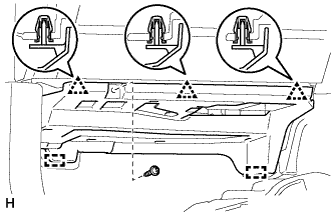
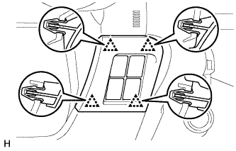
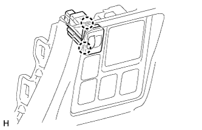
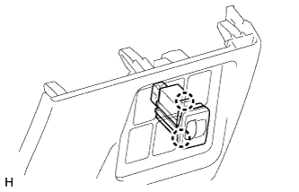

ВЫКЛЮЧАТЕЛЬ УПРАВЛЕНИЯ УРОВНЕМ ФАР > СНЯТИЕ |
| 1. СНИМИТЕ ОПОРНУЮ НАКЛАДКУ ЛЕВОЙ ДВЕРИ (для моделей с левосторонним рулевым управлением) |
 |
Наклейте защитную ленту вокруг опорной накладки двери.
С помощью отвертки освободите 4 фиксатора, 10 захватов и 2 направляющих и снимите опорную накладку двери.
| *1 | Защитная клейкая лента |
| 2. СНИМИТЕ ОПОРНУЮ НАКЛАДКУ ПРАВОЙ ДВЕРИ (для моделей с правосторонним рулевым управлением) |
| 3. СНИМИТЕ БОКОВУЮ ОБЛИЦОВОЧНУЮ НАКЛАДКУ С ЛЕВОЙ СТОРОНЫ КОЖУХА (для моделей с левосторонним рулевым управлением) |
 |
Снимите фиксатор.
Освободите фиксатор и захват и снимите боковую облицовочную накладку кожуха.
| 4. СНИМИТЕ БОКОВУЮ ОБЛИЦОВОЧНУЮ НАКЛАДКУ С ПРАВОЙ СТОРОНЫ КОЖУХА (для моделей с правосторонним рулевым управлением) |
| 5. СНИМИТЕ НИЖНЮЮ КРЫШКУ ПАНЕЛИ ПРИБОРОВ № 1 В СБОРЕ |
 |
Для моделей с левосторонним рулевым управлением:
Выверните винт.
Освободите 2 фиксатора и 2 направляющих и снимите нижнюю крышку панели приборов № 1.
|  |
Для моделей с правосторонним рулевым управлением:
Выверните винт.
Освободите 3 фиксатора и 2 направляющих и снимите нижнюю крышку панели приборов № 1.
| 6. СНИМИТЕ ЛЕВУЮ БОКОВУЮ ПАНЕЛЬ ПРИБОРОВ (для моделей с левосторонним рулевым управлением) |
 |
Наклейте защитную ленту вокруг боковой панели приборов.
| *1 | Защитная клейкая лента |
С помощью съемника молдингов отцепите 5 фиксаторов, захват и 3 направляющих и снимите боковую панель приборов.
| 7. СНИМИТЕ ПРАВУЮ БОКОВУЮ ПАНЕЛЬ ПРИБОРОВ (для моделей с правосторонним рулевым управлением) |
 |
Наклейте защитную ленту вокруг боковой панели приборов.
| *1 | Защитная клейкая лента |
С помощью съемника молдингов расцепите 5 фиксаторов, захват и 3 направляющих.
Отсоедините разъем и снимите боковую панель приборов.
| 8. СНИМИТЕ ДЕКОРАТИВНЫЙ ЭЛЕМЕНТ ОБЛИЦОВКИ ПАНЕЛИ УПРАВЛЕНИЯ (для моделей с левосторонним рулевым управлением) |
 |
Наложите защитную ленту вокруг декоративного элемента отделочной накладки панели приборов.
| *1 | Защитная клейкая лента |
С помощью съемника молдингов освободите 3 фиксатора и снимите декоративный элемент отделочной накладки панели приборов.
| 9. СНИМИТЕ ОБЛИЦОВКУ ОТДЕЛОЧНОЙ НАКЛАДКИ ПАНЕЛИ ПРИБОРОВ (для моделей с правосторонним рулевым управлением) |
 |
Освободите 4 фиксатора.
Отсоедините все разъемы и снимите облицовку отделочной накладки панели приборов.
| 10. СНИМИТЕ НИЖНЮЮ ОТДЕЛОЧНУЮ НАКЛАДКУ ПАНЕЛИ ПРИБОРОВ В СБОРЕ |
|  |
Освободите 4 фиксатора.
Отсоедините все разъемы и снимите отделочную накладку панели приборов.
| 11. СНИМИТЕ НИЖНЮЮ ОТДЕЛОЧНУЮ НАКЛАДКУ ПАНЕЛИ ПРИБОРОВ В СБОРЕ |
 |
С помощью отвертки освободите 2 захвата и откройте крышку.
| *1 | Защитная клейкая лента |
 |
Для моделей без подушки безопасности для защиты коленей:
Выверните 2 болта <C>.
Освободите 7 фиксаторов.
Отсоедините все разъемы и все кабели и снимите нижнюю отделочную накладку панели приборов.
 |
Для моделей с подушкой безопасности для защиты коленей:
Выверните 2 болта <C>.
Освободите 14 фиксаторов.
Отсоедините все разъемы и все кабели и снимите нижнюю отделочную накладку панели приборов.
| 12. СНИМИТЕ ВЫКЛЮЧАТЕЛЬ УПРАВЛЕНИЯ УРОВНЕМ ФАР (для моделей с левосторонним рулевым управлением) |
|  |
Освободите 2 захвата и снимите выключатель.
| 13. СНИМИТЕ ВЫКЛЮЧАТЕЛЬ УПРАВЛЕНИЯ УРОВНЕМ ФАР (для моделей с правосторонним рулевым управлением) |
|  |
Освободите 2 захвата и снимите выключатель.